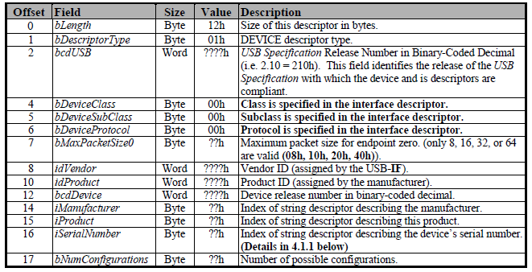
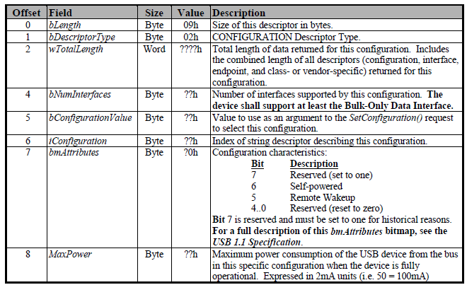
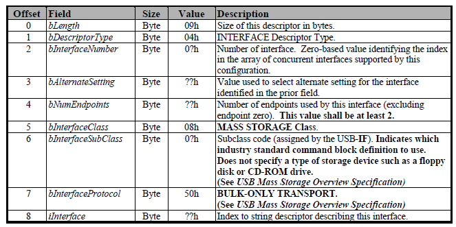
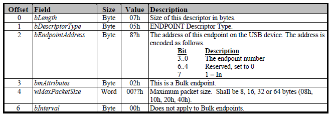
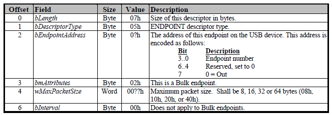

7.12. USB 升级模式¶
USB 升级功能通过实现基于 USB Bulk 传输的自定义设备来完成的，设备端与主机端通过自定义的 USB 升级协议进行通信。
完整的固件升级流程分为两个阶段，第一个阶段为 BROM 阶段，此阶段主要目的是完成系统运行环境的初始化， 包括初始化 DDR，下载并运行下一级升级程序；第二阶段为 U-Boot 阶段，此阶段实现固件下载和烧录等功能。 这里讨论 BROM 阶段的功能和实现。
7.12.1. 自定义设备¶
端点（End Point）是设备与主机之间进行数据传输的逻辑接口。自定义的 USB Bulk 传输设备包含下面几个端点：
EP0
EP Bulk-in
EP Bulk-out
EP0 是一个控制端点，数据传输为双向传输，用于对设备进行枚举和基本的控制。在设备完成配置之前， 只有 EP0 端点可用，主机通过 EP0 来发送命令，获取设备的信息，并通过它来配置设备。 EP0 端点没有专门的描述符，只需要在设备描述符中定义它的最大包长度。
EP Bulk-in端点，用来从设备端传输数据和状态给主机端，对设备端而言，是一个数据发送端点。该端点采用 Bulk 传输模式。
EP Bulk-out端点，用来从主机端传输命令和数据给设备端，对设备端而言，是一个数据接收端点。该端点使用 Bulk 传输模式。
初始化过程中，设备需要提供下列描述符。
设备描述符（Device Descriptor）
其中 idVendor 和 idProduct 是必须的。Vendor ID 需要向 USB-IF 购买，Product ID 由厂商自定义。
AIC 购买的 Vendor ID 为 0x33C3，USB 升级所用的 Product ID 为 0x6677（”fw” 的ASCII 码值，表示用于 firmware upgrade）。
配置描述符（Configuration Descriptor）
bNumInterfaces 设置为1，仅支持一个 Bulk-Only 接口。bmAttributes 设置为0x80。
接口描述符（Interface Descriptor）
bNumEndpoints 设置为0，包含Bulk-in, Bulk-out 两个端点。 bInterfaceClass，bInterfaceSubClass 和 bInterfaceProtocol 设置为 0xff ，表示自定义类型。
Bulk-in 端点描述符（Bulk-in Endpoint Descriptor）
Bulk-out 端点描述符（Bulk-out Endpoint Descriptor）

具体的细节可以参考《Universal Serial Bus Mass Storage Class Bulk-Only Transfer》。
7.12.2. 数据通信¶
BROM 阶段的 USB 设备所支持的命令列表如下。
命令 |
值 |
功能 |
|---|---|---|
GET_HWINFO |
0x00 |
获取硬件相关信息 |
GET_TRACEINFO |
0x01 |
获取 BROM 的一些调试跟踪信息，AIC内部命令 |
WRITE |
0x02 |
写数据到 CPU 可访问的地址空间 |
READ |
0x03 |
从 CPU 可访问的地址空间读取数据 |
EXEC |
0x04 |
指定位置开始运行程序 |
JTAG_UNLOCK |
0x06 |
解锁 JTAG |
BOOT_CONTINUE |
0x07 |
跳出 USB 升级模式的循环，重新从存储设备启动 |
SET_FWC_META |
0x10 |
发送固件组件(Firmware Component)的描述信息 |
GET_BLOCK_SIZE |
0x11 |
获取传输的数据块大小，发送的有效数据须以该块大小为单位 |
SEND_FWC_DATA |
0x12 |
发送固件组件数据 |
GET_FWC_CRC |
0x13 |
获取设备端对所接收数据计算的CRC值，以确认传输是否出错 |
GET_FWC_BURN_RESULT |
0x14 |
获取组件烧录后，设备端的校验结果 |
GET_FWC_RUN_RESULT |
0x15 |
获取组件在运行之后的返回结果 |
7.12.3. 升级流程¶
在进行固件升级的流程中，BROM 阶段需要完成几个任务：
下载 SPL 并且执行，完成 DDR 的初始化
下载 U-Boot 环境变量到指定位置
下载用于升级的 U-Boot 程序，并且执行，进入 U-Boot 阶段
对于升级而言，上述每一个部分都是升级固件的组件。制作升级固件时，每一个组件都有一个对应的组件描述信息。 利用这些信息，通过流程的抽象，上述的任务可被一个统一的流程进行处理。
具体的组件处理流程：
SET_FWC_META
工具将对应的组件描述信息发送给设备端。设备端的升级程序依据描述信息，准备接收数据。
GET_BLOCK_SIZE
工具获取本次组件传输的数据块大小。发送组件数据的时候，以这个块大小为单位进行发送。
SEND_FWC_DATA
工具发送组件的数据给设备端。设备端在接收数据的同时，对接收到的数据进行 CRC 校验。 接收完成之后，依据前面接收的组件描述信息，对数据进行具体的操作。在 BROM 阶段， 如果组件是一个可执行程序，则在接收完成之后，运行组件。
GET_FWC_CRC
工具获取设备端所计算的 CRC 校验值，用来判断组件的传输是否正确。
GET_FWC_BURN_RESULT
工具获取设备端对组件数据的烧录是否正确。这是统一流程的一个步骤，BROM 不支持烧录组件，因此直接回复成功。
GET_FWC_RUN_RESULT
工具获取组件运行的返回值。对于可执行组件，则将组件运行返回值传给工具端； 对于不可置信组件，则统一返回0.
进行固件升级的时候，主机从固件包中顺序读取上述组件，按照流程逐个组件发送给设备端，即可完成 BROM 阶段的几个任务。
7.12.4. 调试功能¶
BROM 阶段的升级协议提供了几个用于调试的命令。
WRITE
READ
EXEC
这几个命令可以用于 IC 验证等调试场景，可以完成诸如读写内存，读写寄存器，以及下载一段程序并执行等操作。